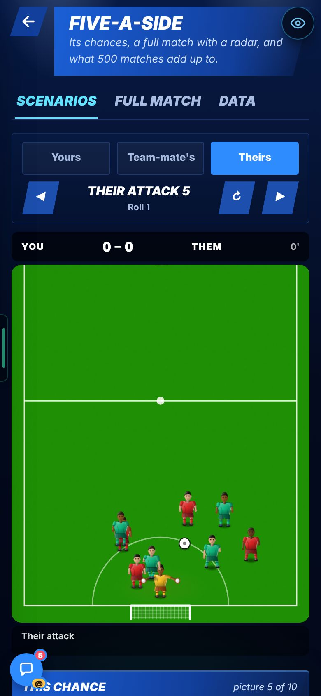
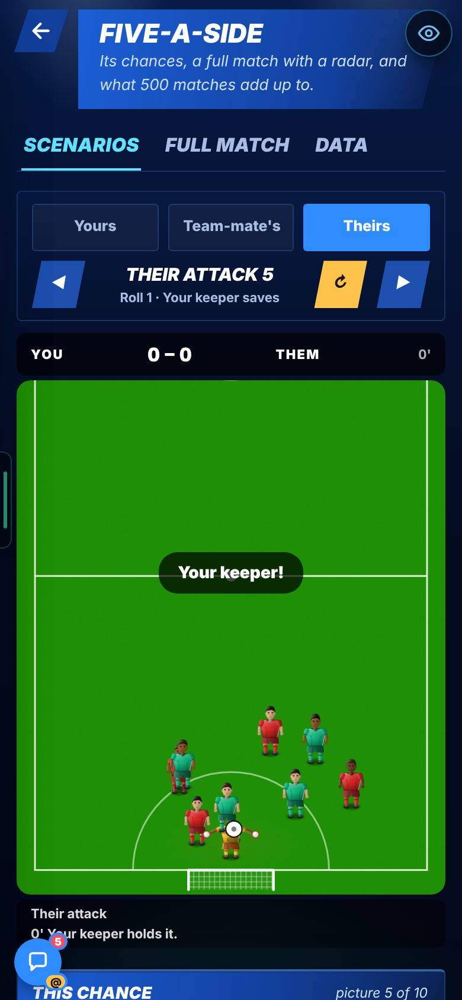
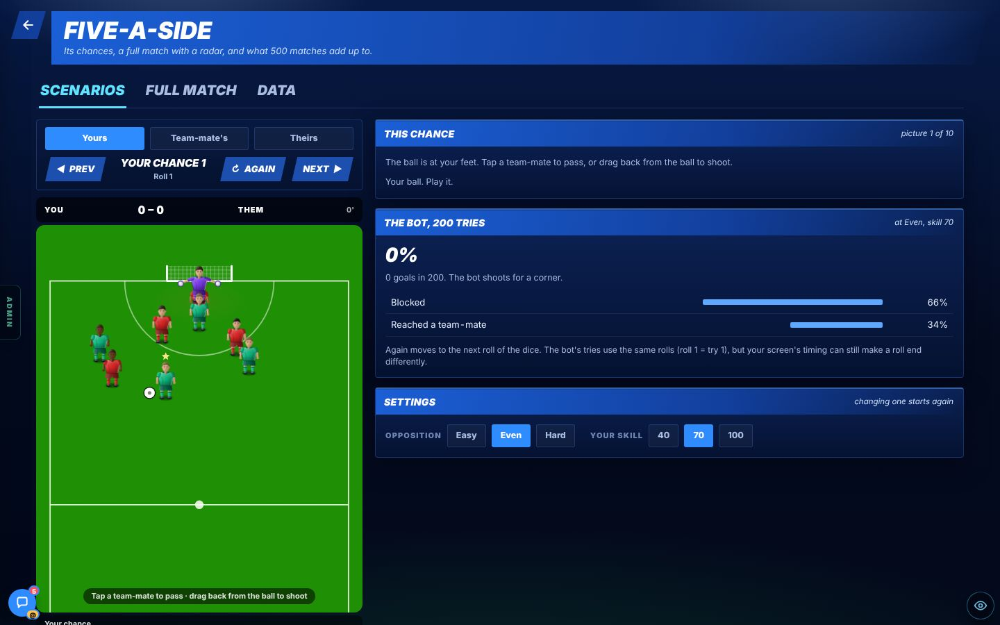
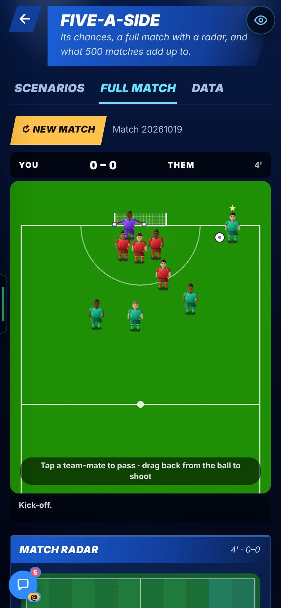
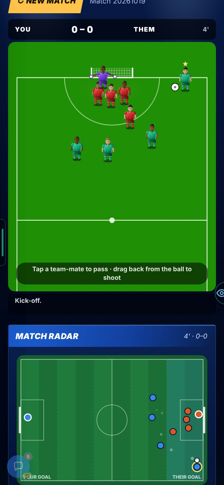
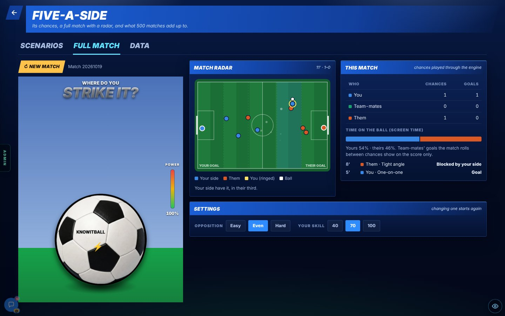
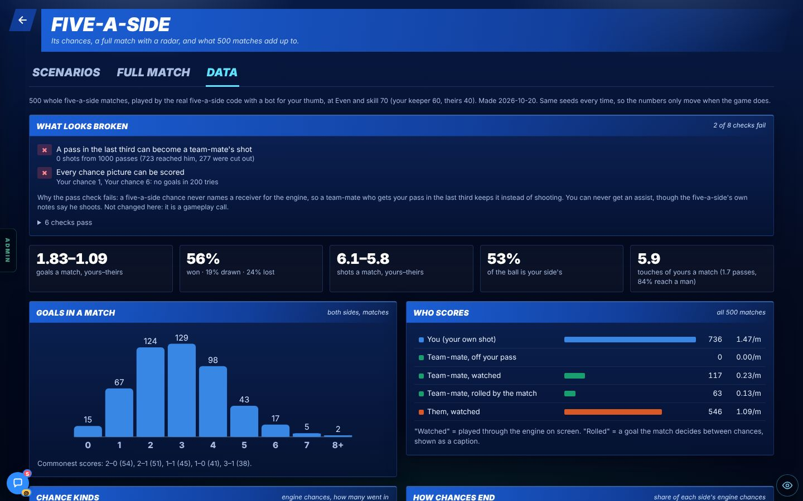
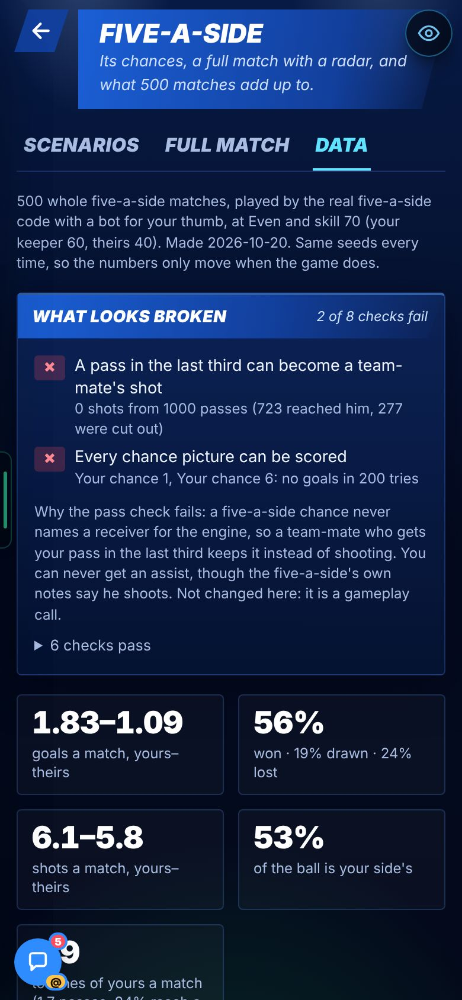
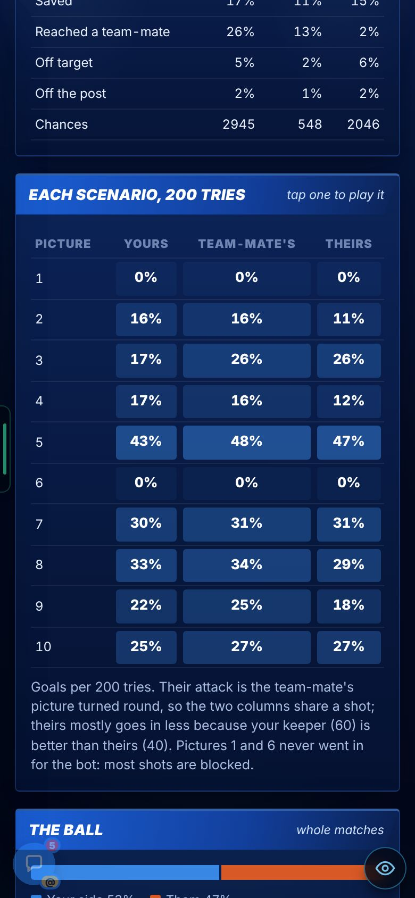

Check these is the short list at the top. Look at each one in the game.
Each change is Problem → Why → Fix, with its picture right under it.
The tag says how sure we are:seen on a screen, measured as a number, reasoned from the code only, not seen.
Needs your OK lists what waits on you. Then press Read and understood on the admin Patch notes page, so we know you read it.
This page is v0.72 in Admin → Patch notes.
ADDED
Five-a-side is back as a test area with three tabsseen
Problem
The old five-a-side game was not used anywhere (19 Oct notes, A-7).
Why
You said to bring it back as its own test area, with tabs: “Give things tabs. I think tabs are the way to go.”
Fix
A new page, /star-fiveaside-dev, with Scenarios, Full match and Data. Scenarios has the gallery’s 10 five-a-side pictures. Play each one as Yours, Team-mate’s or Theirs. Prev, Again and Next stay pinned on top. Full match plays from kick-off to full time. Data comes from 500 simulated matches.

Look at: the three tabs, then Yours / Team-mate’s / Theirs, then Prev, Again, Next pinned above the pitch. This is Their attack 5.

Look at: after the roll: “Your keeper!” on the pitch and “Roll 1 · Your keeper saves” under the name.
More pictures (1): Scenarios on a computer

Look at: the pitch on the left. On the right, “The bot, 200 tries” says 0% for Your chance 1: 66% blocked.
A match radar made for five-a-sideseen
Problem
The old Match radar draws zones only, with no players. It cannot show five-a-side.
Why
It draws zones only, with no players. (The report gives no deeper cause.)
Fix
A new SVG radar in the same look. It shows all 10 players and the ball. It reads from a read-only callback, so no engine file and no drift file changed.

Look at: the Full match tab on a phone: pitch, then “Tap a team-mate to pass · drag back from the ball to shoot”.

Look at: the Match radar under the pitch. Blue is your side, orange is theirs, the white dot is the ball.
Look for: the dots on the radar moving with the men on the pitch. The clip is 8 seconds long, on a computer.
A full match with the radar (computer, 8 s). Press play. It has no sound.More pictures (1): the radar on a computer

Look at: radar, “This match” table and the Opposition and Your skill buttons.
A Data tab from 500 simulated matchesmeasuredseen
Problem / Why
Not in the report.
Fix
The Data tab plays 500 whole matches with a bot for your thumb (Even opposition, skill 70, same seeds every time). It lists what looks broken (2 of 8 checks fail, below), then goals, who wins, who scores and how chances end.
Matches won (500 matches, Even, skill 70)56%
Matches drawn19%
Matches lost24%
Goals per match: 1.83 yours, 1.09 theirs. Shots 6.1 to 5.8. You have 53% of the ball.
Easy: share of matches won82%
Hard: share of matches won28%
Easy ends 2.58 to 0.56 in goals. Hard ends 1.15 to 1.55.

Look at: the red “What looks broken” box at the top, then the five big numbers and the goals chart.
More pictures (2): Data on a phone

Data on a phone.

Scenarios data on a phone.
CHANGED
The 10 chance pictures live in one fileno still
Problem / Why
Not in the report.
Fix
The pictures moved into one shared file. The gallery and the new page read the same one. Nothing is copied.
FIXED
Full time right after their chance drew the scene the wrong way roundno still
Problem
At full time, straight after their chance, the scene showed the wrong way round with the kits swapped. It also reached the trial’s five-a-side.
Why
Not in the report.
Fix
Fixed. The report gives no still of the fix.
KNOWN ISSUES
A pass to a team-mate never becomes his shotmeasuredgameplay call for Harry
Problem
0 shots from 1,000 passes. 723 reached him and 277 were cut out. You can never get an assist.
Why
A five-a-side chance never names a receiver for the engine. So a team-mate who gets your pass in the last third keeps the ball. The five-a-side’s own notes say he shoots.
Status
Not changed. It is a gameplay call.
Shots by a team-mate off your pass, out of 1,000 passes0 of 1,000
Chance pictures 1 and 6 never score for the botmeasuredgameplay call for Harry
Problem
0 goals in 200 tries on each. Picture 1: 66% of shots are blocked. Picture 6: 99.5% are blocked.
Why
The men stand so that nearly every shot is blocked. (Reasoned from the blocked share. The report gives no cause.)
Status
Not changed. It is a gameplay call.
Picture 1: shots blocked66%
Picture 6: shots blocked99.5%
THE NUMBERS
The numbers, if you want them
500 matches. Even opposition, your skill 70, your keeper 60, theirs 40. Same seeds every time.
Matches won (500 matches, Even, skill 70)56%
Matches drawn19%
Matches lost24%
Goals per match: 1.83 yours, 1.09 theirs. Shots 6.1 to 5.8. You have 53% of the ball.
By level.
Easy: share of matches won82%
Hard: share of matches won28%
Easy ends 2.58 to 0.56 in goals. Hard ends 1.15 to 1.55.
Goals per match. Yours 1.83, theirs 1.09. Shots. 6.1 yours, 5.8 theirs. The ball. 53% of it is yours.
What looks broken. 2 of 8 checks fail: 0 of 1,000 passes become a shot; chance pictures 1 and 6 have 0 goals in 200 tries.
VIDEOS
One clip is on this page.
A full match with the radar, on a computer, 8 seconds. It is under “A match radar made for five-a-side” above.
SEEN / NOT SEEN
Seen on a screen
All three tabs on a phone and on a computer (Chromium)
Two full matches played to full time, with the radar matching the pitch